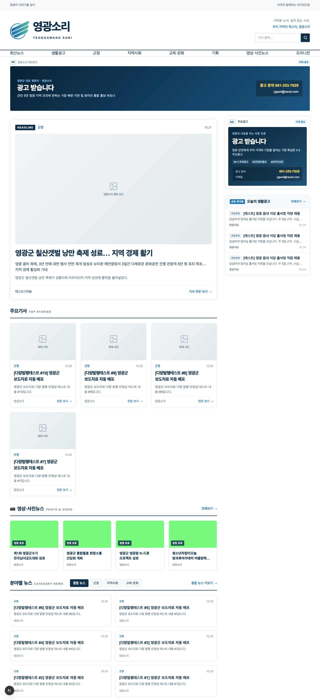
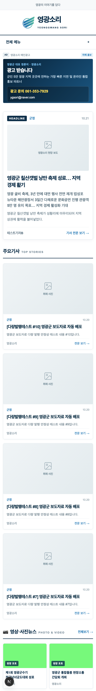
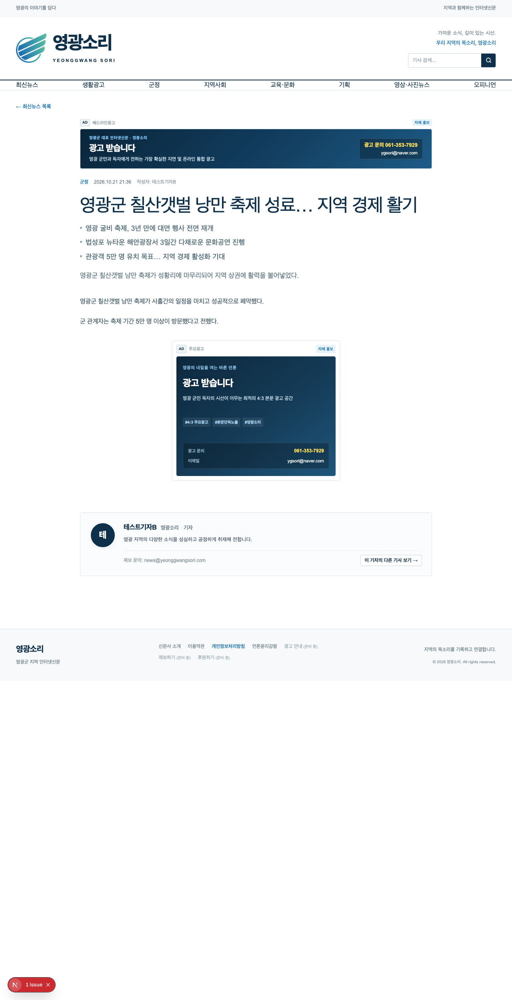
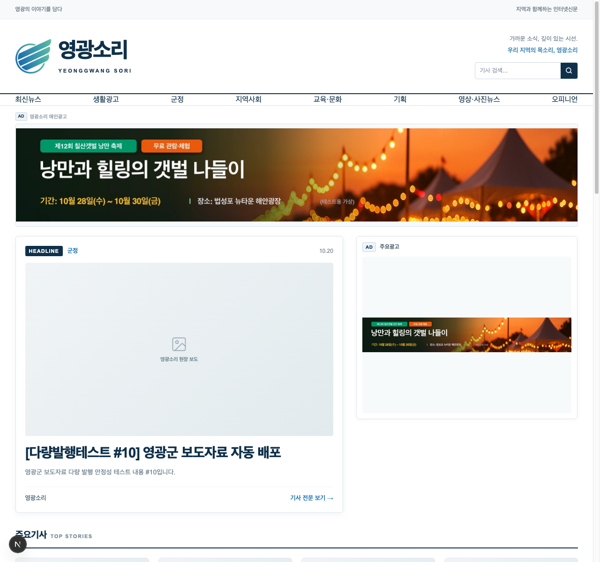
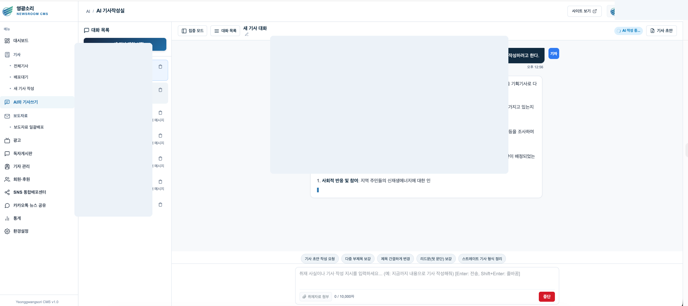
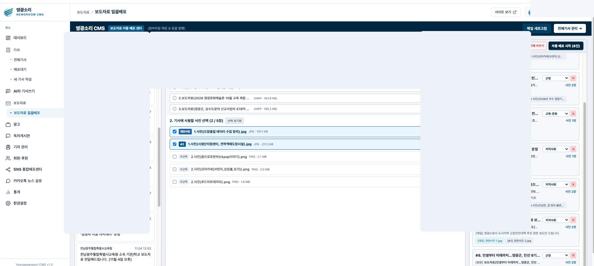
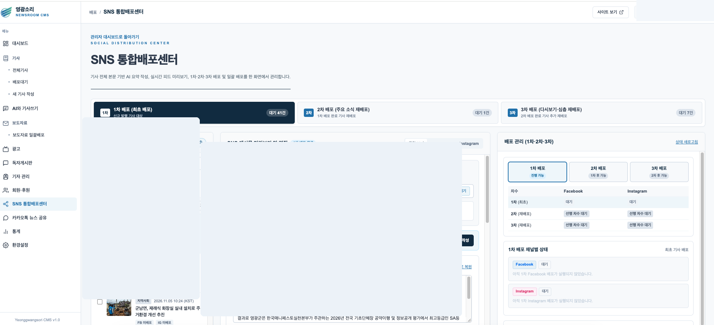
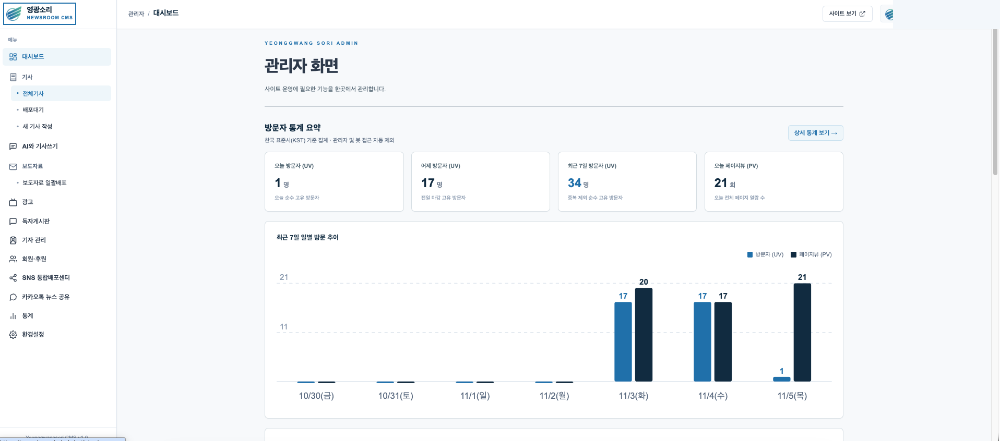
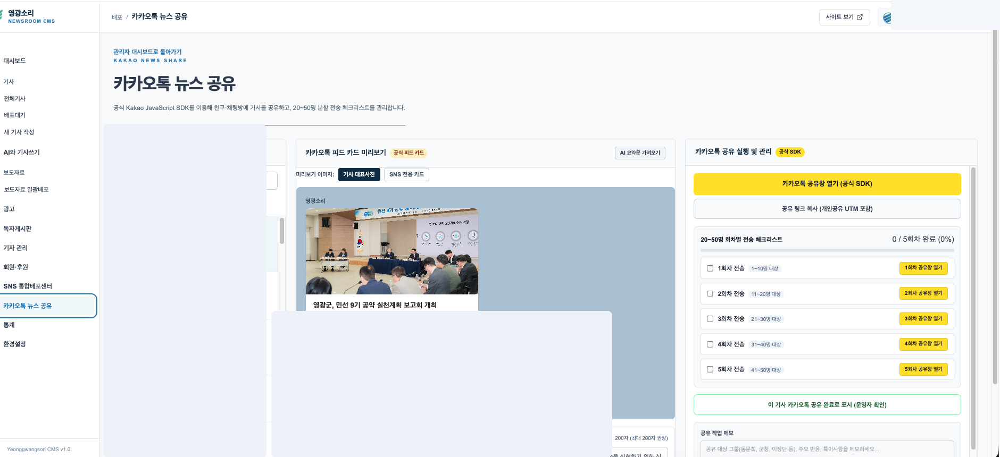

실제 화면 확대 보기
10여 년의 지역신문 기자 경험을 바탕으로,
홈페이지 구축부터 취재·기사 작성·발행·광고·SNS 운영까지 고민했습니다.
취재 가기도 바쁜데 홈페이지 관리와 광고 배너까지 혼자 다 챙겨야 하는 지역 언론의 현실,
신문을 직접 만들어보지 않은 외주 개발사는 알 수 없습니다.
기자의 눈높이에서 가장 단순하고 편리하게 설계한 올인원 SaaS를 만나보세요.
현장을 뛰며 직접 겪었던 소규모 언론사의 4대 고질적 고민, 글로컬소프트가 정확히 짚고 해결합니다.
취재원 인터뷰하기도 바쁜 하루, 기관 보도자료를 옮겨 적고 오탈자를 고치며 사진 크기를 조절하는 등 단순 편집 작업에 아까운 취재 시간이 지나치게 소모됩니다.
오래전 제작된 복잡한 관리자 시스템은 스마트폰에서 글자 하나 고치기도 어렵습니다. 긴급 속보나 사건 현장을 전하려 해도 사무실 컴퓨터 앞까지 돌아와야만 합니다.
메뉴 하나 바꾸거나 광고 배너 하나 올리는 데도 외주 개발사 연락을 기다려야 합니다. 매달 나가는 유지보수 비용에 비해 실질적인 지원은 느리고 답답합니다.
정성스레 쓴 기사를 페이스북, 밴드, 카카오톡으로 일일이 링크를 복사해 퍼뜨려야 합니다. 지역 소상공인 광고 배너를 관리하고 정산하는 체계도 미흡합니다.
기자의 소중한 시간을 아껴주고, 신문사 본연의 가치인 깊이 있는 취재와 보도에 집중할 수 있도록 돕습니다.
자사 미디어(영광소리) 실무 현장에서 매일 사용하며 검증된 직관적인 기사 작성기와 섹션 분류 체계입니다.
코딩 지식이 없어도 지역 상가와 관공서 배너 이미지를 원하는 위치에 손쉽게 올리고 게시 기간을 관리할 수 있습니다.
사무실 컴퓨터 앞이 아니어도 현장에서 스마트폰으로 사진을 첨부하고, 기사 등록 및 출고 승인 상태를 신속하게 관리합니다.
지자체·공공기관에서 전달되는 긴 분량의 보도자료를 분석하여 핵심 위주로 초안을 정리하는 보조 기능입니다.
취재 현장의 메모나 인터뷰 녹음 요약을 돕고, 기사 작성 시 문단 흐름과 맞춤법 점검을 지원하는 보조 시스템입니다.
소셜 미디어(SNS) 기사 유통을 지원하는 자동 공유 기능과 종이신문 호수별 지면 PDF 웹 뷰어 구축 기능입니다.
10여 년의 현장 기자 경험을 바탕으로 설계하고 영광소리(ygsori.com)에서 실무 검증한 통합 운영 시스템입니다.
가독성을 극대화한 정통 정론지 표준 레이아웃과 반응형 모바일 뷰, 기사 상세 및 광고 배치 실무입니다.

자사 미디어 영광소리(ygsori.com)의 실제 독자 서비스 화면으로, 지역 정론지 표준에 맞춘 헤드라인·주요 기사·카테고리 다단 배치를 지원합니다.

스마트폰 화면에서도 기사 가독성을 극대화한 모바일 레이아웃으로, 긴급 뉴스 속보와 상단 메인 광고 배너가 깔끔하게 반응합니다.

신문사 표준인 본문 양쪽 정렬(Justify) 규칙과 기자 실명 바이라인 프로필, 본문 맞춤 광고가 유기적으로 연동된 실제 기사 뷰어입니다.

1200x200 와이드 헤더 배너와 4:3 지면 배너를 코딩 없이 등록하고, 시작일과 마감일을 지정해 지역 광고 수익화를 실현한 실제 사례입니다.
기사 작성부터 보도자료 처리, 발행과 광고 관리까지. 지역신문의 실제 업무를 이해하고 설계한 AI 통합 운영 시스템을 만나보세요.

취재 내용을 AI와 대화하며 정리하고 기사 초안을 작성합니다.

이메일로 수신한 보도자료와 사진을 분석하고 기사 작성부터 일괄발행까지 지원합니다.

발행 기사를 SNS 채널별로 편집하고 배포 작업을 관리합니다.

기사와 광고, 발행 및 운영 업무를 하나의 시스템에서 관리합니다.

기사별 카카오톡 공유 카드와 공유 작업을 지원합니다.
※ 위 독자 화면 및 관리자 화면은 주식회사 글로컬소프트가 자체 개발하여 정식 서비스 중인 영광소리(ygsori.com)의 실제 운영 화면입니다. 각 이미지를 클릭하시면 고화질 원본으로 확대하여 확인하실 수 있습니다.
새롭게 출발하는 창간 언론사부터 기존 기사를 안전하게 보존해야 하는 노후 신문사까지 맞춤형으로 지원합니다.
등록 요건 검토부터 도메인 설정, 반응형 웹사이트 구축까지 처음 시작하는 언론사를 위해 올인원으로 셋업합니다.
수년간 축적된 소중한 기사 데이터를 사전 분석하여 안전하게 이전하고 최신 모바일 환경으로 전면 리뉴얼합니다.
지역 소식지, 동문회보, 협회 정기간행물, 전문 분야 웹진을 깔끔하고 지속 가능하게 발행할 수 있도록 구축합니다.
글로컬소프트는 천편일률적인 비싼 외주 비용을 요구하지 않습니다. 신문사 규모, 동시 기자 계정 수, 기존 기사 데이터 이전 규모를 정직하게 진단하여 가장 합리적인 도입 플랜을 무료로 제안해 드립니다.
홈페이지 구축부터 AI 기반 신문사 운영까지, 필요한 기능에 맞춰 선택하세요.
신규 창간 및 1인·소규모 인터넷신문사
AI 기반 취재·편집 자동화가 필요한 성장형 언론사
기존 신문사 이전 및 맞춤형 구축
복잡한 기술 용어 대신 언론 현장의 언어로 소통합니다.
신문사 창간, 노후 시스템 개편, 데이터 이전 고충 등 어떤 내용이든 편하게 남겨주시면 대표자가 직접 친절하게 상담해 드립니다.
010-9354-7929 (평일 09:00 ~ 18:00)
shokun2002@naver.com
원격 화면 공유(Zoom/Google Meet)를 통한 맞춤형 실시간 데모 제공